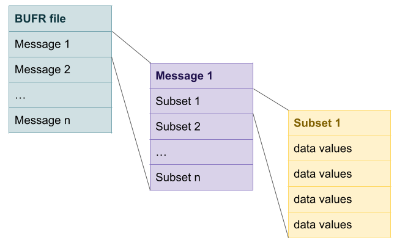

Working with bufr files
The Binary Universal Form for the Representation of meteorological data (BUFR) is a binary data format maintained by the World Meteorological Organization (WMO). According to Wikipedia BUFR was created in 1988 with the goal of replacing the WMO’s dozens of character-based, position-driven meteorological codes, such as SYNOP (surface observations), TEMP (upper air soundings) and CLIMAT (monthly climatological data). BUFR was designed to be portable, compact, and universal. BUFR belongs to the category of table-driven code forms, this mean that the information is codified using specific tables previously defined.
NCEP converts and archives all observational data received into a BUFR tank and provides several kinds of BUFR files for its global and regional numerical weather forecast systems. These BUFR files are used by GSI as the standard data sources and can be download from Global Data Assimilation System (GDAS) webpage.
A BUFR file is divided into one or more messages, each message containing one or more subsets and each subset containing one or more data values.

A message is a continuous binary stream that can be divided into 6 sections:
| Section Number | Name | Contents |
|---|---|---|
| 0 | Indicator section | “BUFR”, length of message, edition number |
| 1 | Identification section | Originating center and subcenter, data category and subcategory, master table and version number |
| 2 | (Optional) Local Use section | (Optional) free-format additional information of potential interest to users |
| 3 | Data Description section | Number of data subsets, compression indicator, and list of descriptors defining the content of each data subset |
| 4 | Data section | One or more data subsets, each containing values corresponding to the list of descriptors defined within Section 3 |
| 5 | End section | “7777” |
How to interpret the information in a message
Section 1 of each message with include the relevant information associated to the data: data type and observation date and time. However, the information is encoded using mnemonics. To decode the information in a BUFR file we will need the table that was used to create the file. In the case of prepBUFR files the table has different sections (check the complete table here). In general this tables includes the mnemonics and a short description. The first part of the prepBUFR table includes the mnemonics associated to the data type:
.------------------------------------------------------------------------------.
| ------------ USER DEFINITIONS FOR TABLE-A TABLE-B TABLE D -------------- |
|------------------------------------------------------------------------------|
| MNEMONIC | NUMBER | DESCRIPTION |
|----------|--------|----------------------------------------------------------|
| | | |
| ADPUPA | A48102 | UPPER-AIR (RAOB, PIBAL, RECCO, DROPS) REPORTS |
| AIRCAR | A48103 | MDCRS ACARS AIRCRAFT REPORTS |
| AIRCFT | A48104 | AIREP, PIREP, AMDAR, TAMDAR AIRCRAFT REPORTS |As an example, let say we get the message type ADPUPA. The first part of the table tell us that this message includes upper-air observations. In a following section of the table we find the structure of this type of messages:
|------------------------------------------------------------------------------|
| MNEMONIC | SEQUENCE |
|----------|-------------------------------------------------------------------|
| | |
| ADPUPA | HEADR SIRC {PRSLEVEL} <SST_INFO> <PREWXSEQ> {CLOUDSEQ} |
| ADPUPA | <CLOU2SEQ> <SWINDSEQ> <AFIC_SEQ> <TURB3SEQ> |This tell us that the message has a header (HEADR - report header sequence) among other things. When we search for HEADR inside the table, we will find the content and it definition:
| HEADR | SID 207003 XOB YOB 207000 DHR ELV TYP T29 TSB ITP SQN |
| HEADR | PROCN RPT TCOR <RSRD_SEQ> Again, we will need to look each mnemonic to understand their meaning:
- SID: STATION IDENTIFICATION
- XOB: LONGITUDE (DEG E)
- YOB: LATITUDE (DEG N)
- DHR: OBSERVATION TIME MINUS CYCLE TIME (HOURS)
- ELV: STATION ELEVATION (METERS)
- TYP: PREPBUFR REPORT TYPE
- T29: DATA DUMP REPORT TYPE
- TSB: REPORT SUBTYPE (HAS VARIOUS MEANINGS DEPENDING ON TYPE)
- ITP: INSTRUMENT TYPE
- SQN: REPORT SEQUENCE NUMBER
- PROCN: PROCESS NUMBER FOR THIS MPI RUN
- RPT: REPORTED OBSERVATION TIME (HOURS)
- TCOR: INDICATOR WHETHER OBS. TIME IN “DHR” WAS CORRECTED
- RSRD_SEQ: RESTRICTIONS ON REDISTRIBUTION SEQUENCE
Each of this mnemonics are described in an specific section:
|------------------------------------------------------------------------------|
| MNEMONIC | SCAL | REFERENCE | BIT | UNITS |-------------|
|----------|------|-------------|-----|--------------------------|-------------|
| | | | | |-------------|
| ACID | 0 | 0 | 64 | CCITT IA5 |-------------|
| SAID | 0 | 0 | 10 | CODE TABLE |-------------|
| SID | 0 | 0 | 64 | CCITT IA5 |-------------|
| SIRC | 0 | 0 | 4 | CODE TABLE |-------------|
| MSST | 0 | 0 | 3 | CODE TABLE |-------------|
| ITP | 0 | 0 | 8 | CODE TABLE |-------------|
| RPT | 5 | 0 | 22 | HOURS |-------------|
| DHR | 5 | -2400000 | 23 | HOURS |-------------|Half of the information included in the header is not useful from the assimilation point of view but it is good to know how it works. For this example we have the {PRSLEVEL} sequence included. This is the “PRESSURE LEVEL SEQUENCE” for upper-air observations and includes humidity, temperature and wind observations at each pressure level.
| PRSLEVEL | CAT <P___INFO> <Q___INFO> <T___INFO> <Z___INFO> <W___INFO> |
| PRSLEVEL | <DRFTINFO> [W1_EVENT] A surface station (ADPSFC) will have a different structure but the idea is the same, everything can be decode from the table.
An introduction on how to read and write BUFR files
Working with BUFR files requires to work with fortran routines. Fortunately there is a library that contains subroutines, functions and other utilities that can be used to read (decode) and write (encode) data in BUFR: NCEPLIBS-bufr. This library is compiled during the compilation of GSI but can also be used independently.
Here is a simplified example of a routine to decode a bufr file:
open(unit_in,file='sample.bufr',action='read',form='unformatted')
call openbf(unit_in,'IN',unit_in)
msg_report: do while (ireadmg(unit_in,subset,idate) == 0)
sb_report: do while (ireadsb(unit_in) == 0)
call ufbint(unit_in,hdr,3,1 ,iret,hdstr)
call ufbint(unit_in,obs,1,10,iret,obstr)
enddo sb_report
enddo msg_report
call closbf(unit_in)- The first level of code open and close the file. It uses the
openbf()andclosebf()functions from the BUFR library. - The second level will read each message. Each loop reads in one message until the last message in the file is reached. It uses the
ireadmg()function. - The third level will read the reports inside each message using the
ireadsb(). - And finally inside each report, we access the data values using the
ufbint()function. In this example we save the header in formation in one array and the observation information in a second array.
GSI includes some example routines as part ad the bufr tools kit. A complete routine to decode a BUFR file can be found here. The routine to encode a BUFR file will have similar characteristics.
And again, BUFR files will be different for different type of observations and you always need the associated mnemonics table.
Decode prepBUFR files
This is not different that we’ve seen previously and the BUFR tools fonder in the GSI code has very good examples to use. But I like to have the data in tidy tables, so I’ve modified that code to decode a prepBUFR file into a table where each row is an observation. This is the routine:
program prepbufr_decode_all_df
!
! read all observations out from prepbufr.
! read bufr table from prepbufr file
! output in a "data frameish" type
!
implicit none
integer, parameter :: mxmn=35, mxlv=250
character(80):: hdstr='SID XOB YOB DHR TYP ELV SAID T29'
character(80):: obstr='POB QOB TOB ZOB UOB VOB PWO CAT PRSS'
character(80):: qcstr='PQM QQM TQM ZQM WQM NUL PWQ '
character(80):: oestr='POE QOE TOE NUL WOE NUL PWE '
real(8) :: hdr(mxmn),obs(mxmn,mxlv),qcf(mxmn,mxlv),oer(mxmn,mxlv)
INTEGER :: ireadmg,ireadsb
character(8) :: subset
integer :: unit_in=10,idate,nmsg,ntb
character(8) :: c_sid
real(8) :: rstation_id
equivalence(rstation_id,c_sid)
integer :: i,k,iret
!
!
open(24,file='prepbufr.table')
open(unit_in,file='prepbufr',form='unformatted',status='old')
call openbf(unit_in,'IN',unit_in)
call dxdump(unit_in,24)
call datelen(10)
nmsg=0
msg_report: do while (ireadmg(unit_in,subset,idate) == 0)
nmsg=nmsg+1
ntb = 0
sb_report: do while (ireadsb(unit_in) == 0)
ntb = ntb+1
!write(*,*)'New secction: ',ntb,' in msg ',nmsg
call ufbint(unit_in,hdr,mxmn,1 ,iret,hdstr)
call ufbint(unit_in,obs,mxmn,mxlv,iret,obstr)
call ufbint(unit_in,oer,mxmn,mxlv,iret,oestr)
call ufbint(unit_in,qcf,mxmn,mxlv,iret,qcstr)
rstation_id=hdr(1)
!write(*,*)
!write(*,'(a14,8f14.1)') c_sid,(hdr(i),i=2,8)
DO k=1,iret
write(*,'(a6,i12,a14,6f17.3,9f17.3,7f17.3)') subset,idate,c_sid,(hdr(i),i=2,6),(obs(i,k),i=1,9),(qcf(i,k),i=1,7)
ENDDO
enddo sb_report
enddo msg_report
call closbf(unit_in)
end programThere are excellent resources for learning how to work with BUFR files from which I have taken many things mentioned here:
- BUFR/PrepBUFR User’s Guide from the Developmental Testbed Center.
- BUFR Reference Manual from the ECMWF.